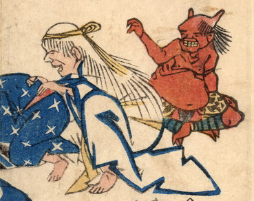

赤い肌の鬼。虎皮の腰巻きで脚絆をつけ、座っている。手前の女の亡者に手を伸ばそうとしている。
出典：親書誌：U426_nichibunken_0170：地震冥途ノ図；ジシンメイドノズ／日付：2010／資源識別子：U426_nichibunken_0170_0004_0000
Copyright (c)2010- International Research Center for Japanese Studies, Kyoto, Japan. All rights reserved.